cada foto representa momentos donde tu felicidad se hizo mi felicidad
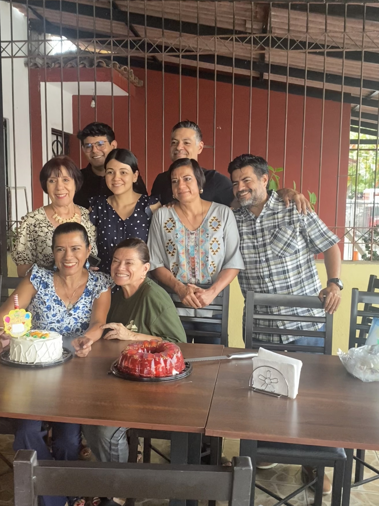
✧ Una gran foto junto a tus seres queridos más especiales, junto a tu familia y las personas que siempre te acompañaron en las buenas y en las malas. Sin duda, tuvieron una vida muy complicada desde que nacieron, pero tú fuiste quien les dio un giro de 360° y los hiciste quienes son ahora. A pesar de que ellos no lo vean así, yo siempre te recordaré que fuiste increíble y que nadie en tu lugar hubiera podido hacer lo mismo. Eres la mejor mami. ✧
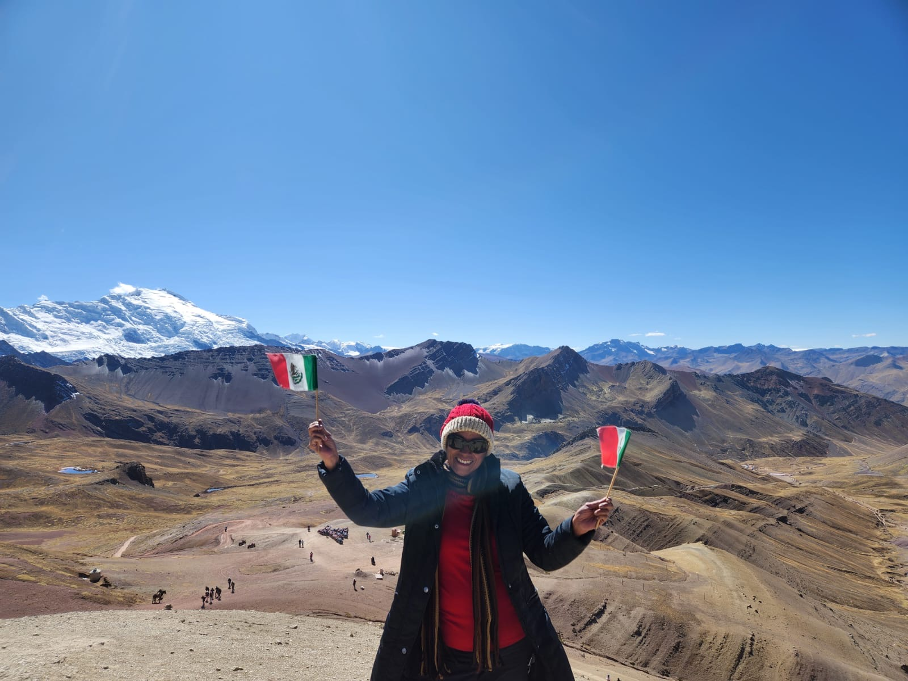
✧ Lo hermosa que te ves en cada foto refleja la alegría con la que vives cada aventura. Siempre me ha admirado tu enorme ilusión por conocer nuevos lugares, descubrir cosas diferentes y seguir explorando el mundo con la misma emoción de siempre. Aunque quizá no lo demuestre mucho, me encanta cuando me envías fotos de tus viajes, de los paisajes que visitas o de esos pequeños momentos que te hacen feliz. A través de cada imagen puedo imaginar lo increíble que la estás pasando, y eso también me alegra a mí. Nunca pierdas esa curiosidad y esas ganas de seguir viviendo experiencias tan bonitas. ✧
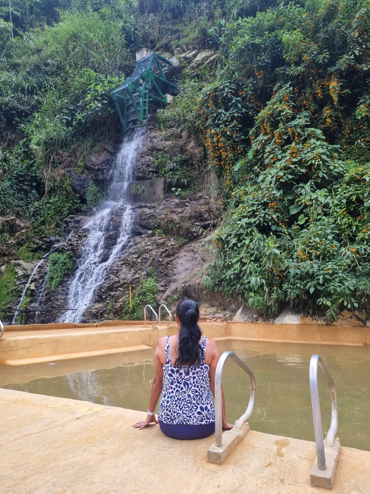
✧ Como dije, es muy bonito ver los lugares tan increíbles que visitas y los paisajes que tienes la oportunidad de conocer. Imagino lo refrescante que debe sentirse respirar un aire nuevo, puro y diferente mientras disfrutas cada momento de tus viajes. Además, siempre sales hermosa en las fotos, pero creo que eso se debe a que haces cada cosa con ilusión y entusiasmo. Al final, cuando haces algo que realmente te emociona, esa felicidad se nota y hace que todo se vea aún más especial. ✧
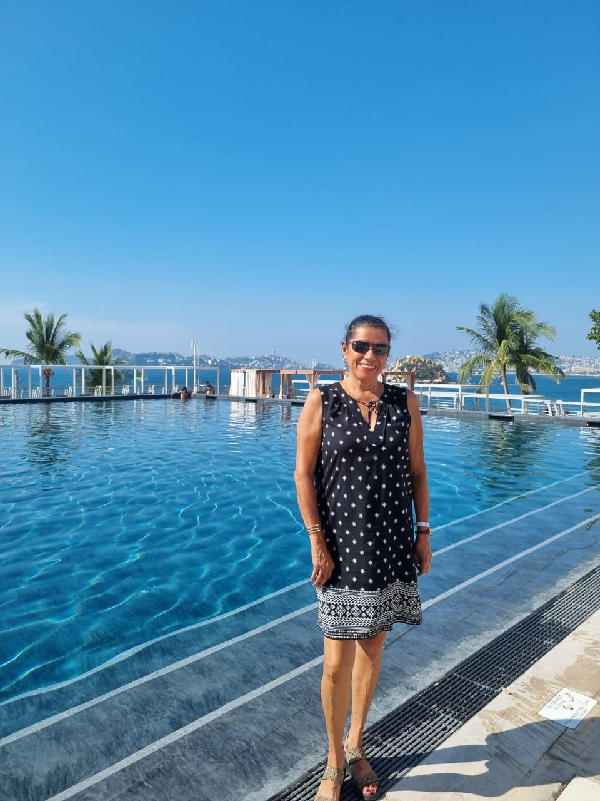
✧ Qué hermoso es Acapulco, pero si soy sincero, lo que más resalta en la foto eres tú, mi bella mami. Siempre encuentras la manera de brillar en cada fotografía, no solo por lo hermosa que te ves, sino por la alegría y la luz que transmites. Espero que sigas llenando tu álbum de momentos tan bonitos como este y que dentro de un tiempo podamos ver muchas más fotos tuyas sonriendo y disfrutando de la vida. ✧
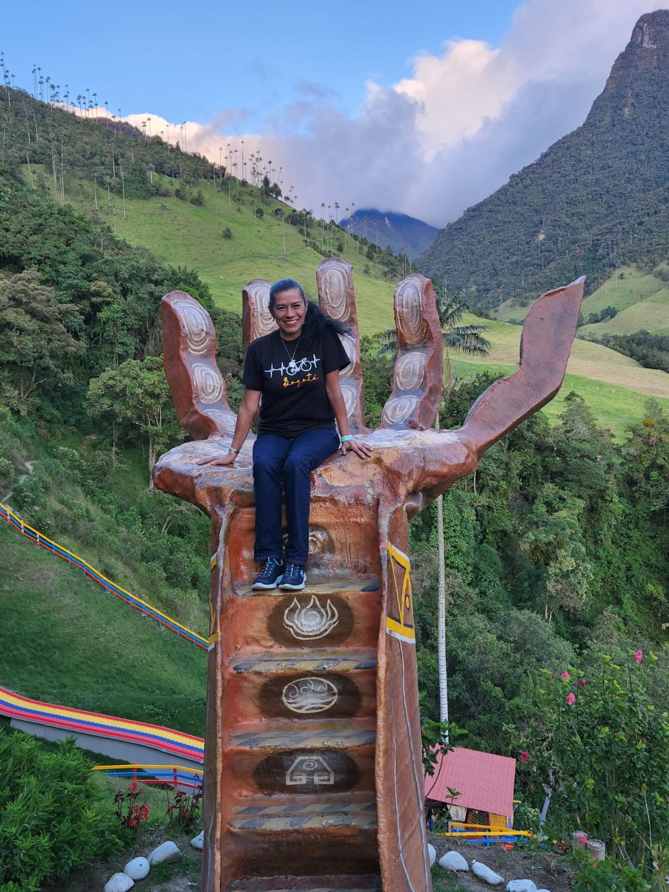
✧ Verte sentada sobre esa gran mano de madera me hace pensar en la libertad con la que vives cada aventura. Siempre has tenido el valor de ir más allá, de conocer nuevos caminos y de disfrutar cada oportunidad que la vida te regala. Esa foto no solo muestra un paisaje hermoso, también refleja tu espíritu libre, fuerte y lleno de ganas de seguir descubriendo el mundo. ✧
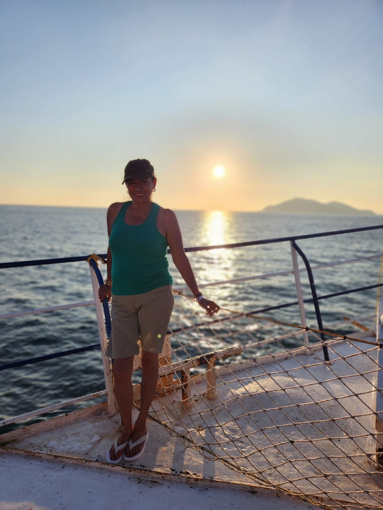
✧ Hay algo especial en esta foto: el mar infinito, el atardecer iluminando el horizonte y tú disfrutando del momento. Parece una de esas escenas que se quedan grabadas para siempre en la memoria. Me encanta verte tan feliz, porque cuando sonríes así transmites una tranquilidad que hace que todo a tu alrededor se vea aún más bonito. ✧
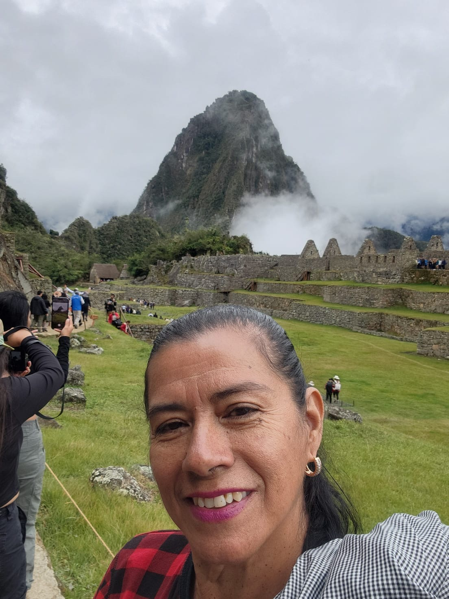
✧ No importa cuántas fotos existan de lugares increíbles, siempre siento que las tuyas tienen algo diferente. Tal vez sea porque detrás de cada paisaje hay una historia, un sueño cumplido o una nueva experiencia vivida. Entre montañas, nubes y caminos llenos de historia, lo que más destaca es la alegría con la que disfrutas cada paso del viaje. ✧
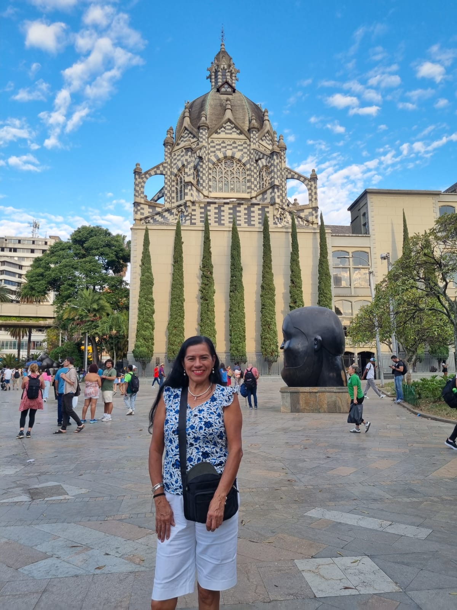
✧ Medellín es una ciudad hermosa, llena de vida y rincones sorprendentes, pero una vez más la foto tiene a su mejor protagonista. Me encanta verte recorriendo nuevos lugares, guardando recuerdos y demostrando que nunca es tarde para seguir cumpliendo metas y descubriendo sitios maravillosos. ✧
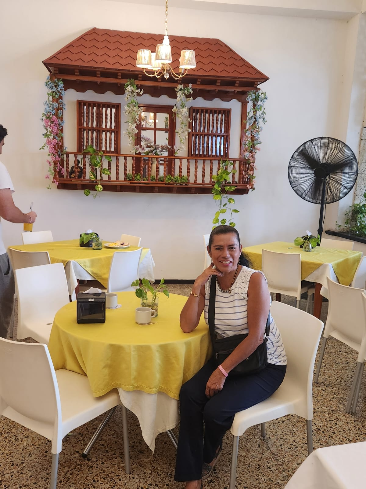
✧ Esta foto en Cartagena transmite paz, descanso y felicidad. Después de tanto esfuerzo y dedicación a lo largo de tu vida, me alegra verte disfrutando momentos como este, rodeada de belleza, tranquilidad y experiencias que mereces vivir una y otra vez. ✧
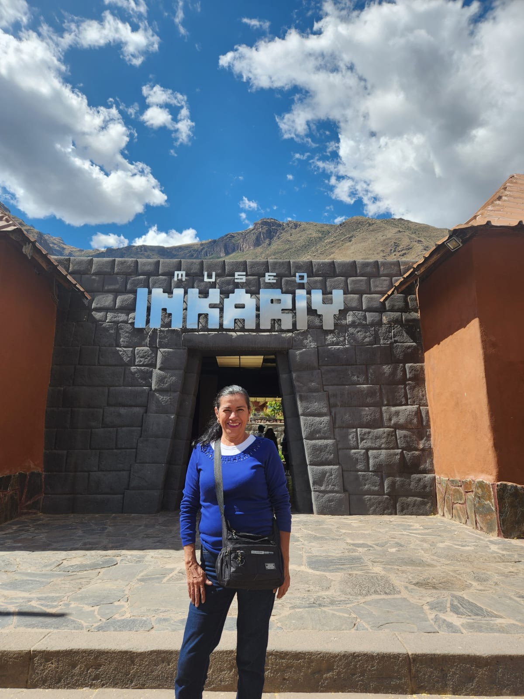
✧ Frente a la entrada del Museo Inkariy se puede notar tu emoción por conocer más sobre la historia, las culturas y todo aquello que hace especial cada destino. Siempre me ha gustado esa curiosidad tuya por aprender cosas nuevas y aprovechar cada viaje para llevarte algo más que simples fotografías. ✧
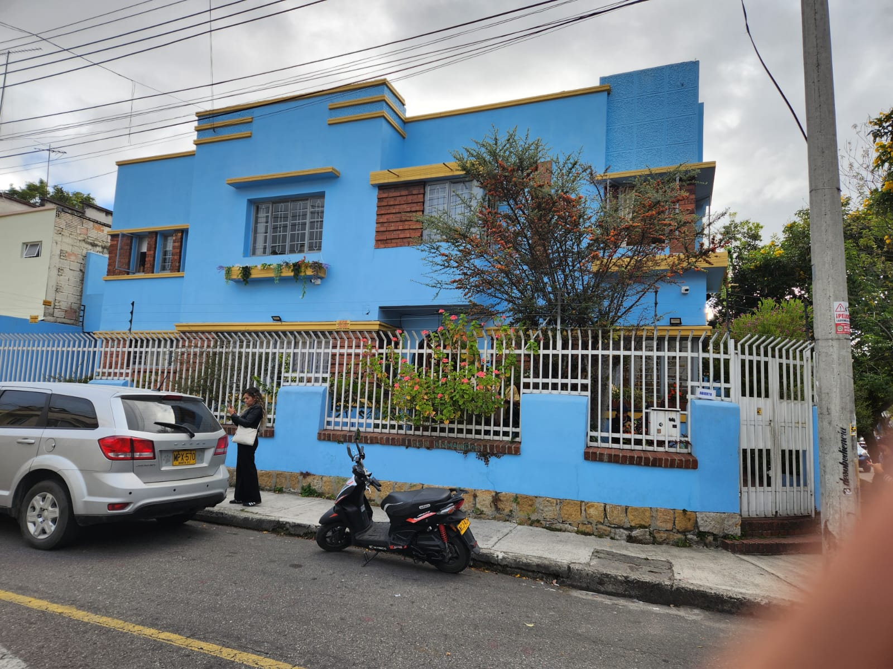
✧ Puede que en esta foto no aparezcas tú, pero aun así siento que habla mucho de ti. Después de haber visto Betty la Fea tantas veces y de haberle tomado tanto cariño a esa historia, llegar hasta la famosa casa y verla con tus propios ojos debió ser un momento muy especial. Me gusta imaginar la emoción que sentiste al estar frente a un lugar que durante años solo conocías a través de una pantalla. Son esas pequeñas cosas las que hacen los viajes inolvidables: no solo conocer nuevos lugares, sino también encontrarse con recuerdos y sueños que nos han acompañado durante mucho tiempo. ✧
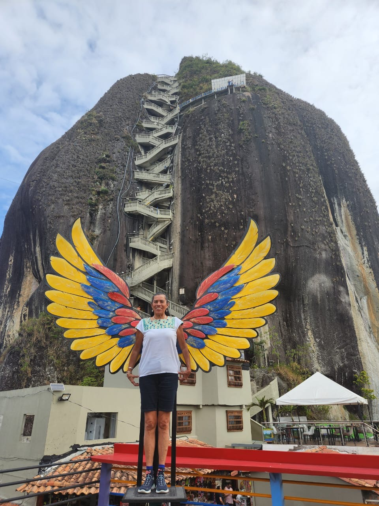
✧ Con esas enormes alas detrás de ti parece que estuvieras lista para volar hacia una nueva aventura. Y, de cierta manera, así eres tú: alguien que nunca deja de soñar, de explorar y de buscar nuevos horizontes. Esta foto refleja perfectamente esa energía tan bonita que te acompaña a donde quiera que vayas. ✧
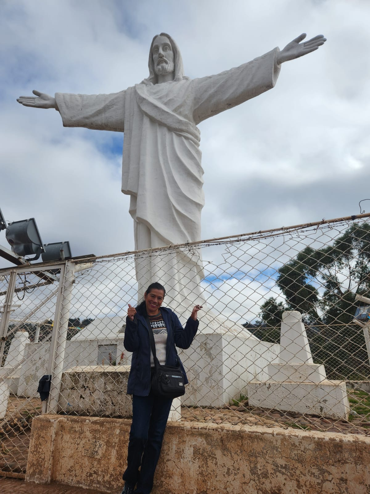
✧ Junto a la estatua de Jesús, esta fotografía transmite serenidad y gratitud. Me gusta pensar que también representa la fortaleza y la fe que siempre te han acompañado en los momentos buenos y difíciles. Esa misma fuerza es la que te ha permitido llegar tan lejos y seguir sonriendo con la misma luz de siempre. ✧
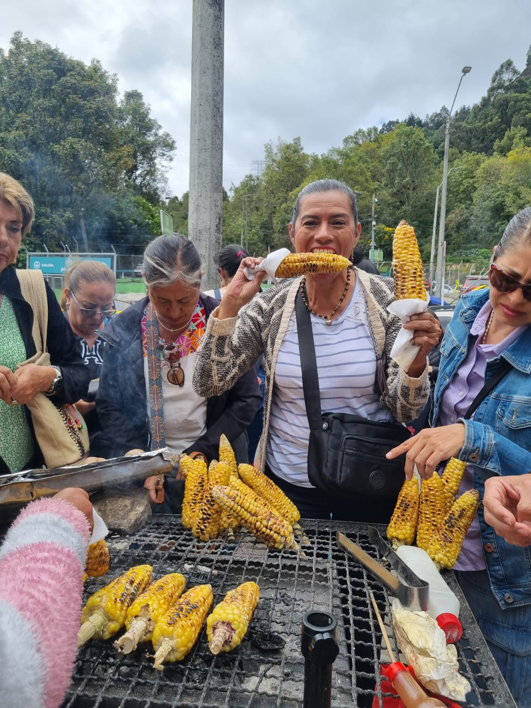
✧ Una de las cosas que más admiro de ti es que nunca le tienes miedo a probar algo nuevo, especialmente cuando se trata de comida. Ya sea un platillo típico, un sabor diferente o algo completamente desconocido, siempre te animas a vivir la experiencia. Esa curiosidad y entusiasmo hacen que cada viaje sea aún más especial y divertido. ✧
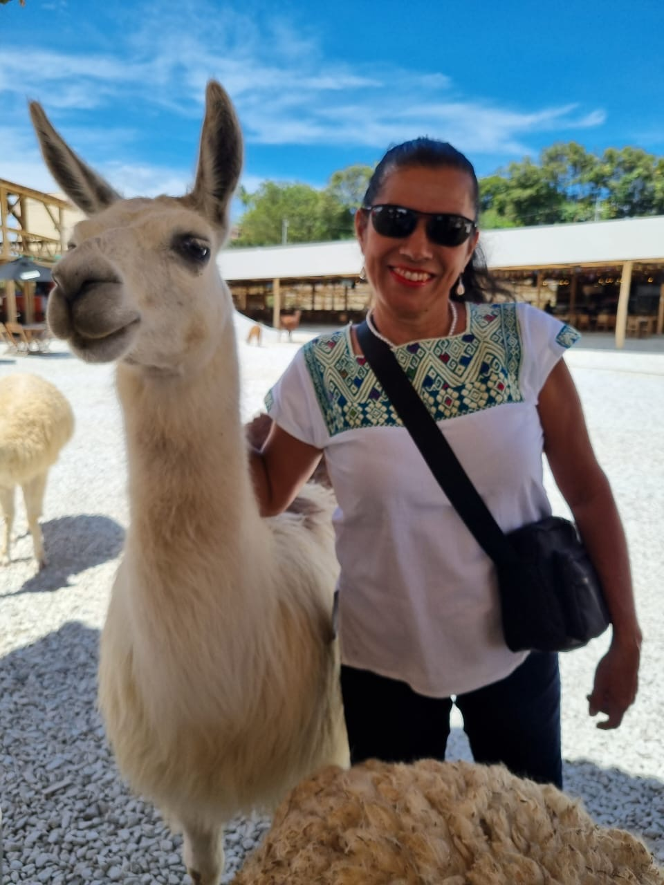
✧ Esta foto junto a la llama blanca me parece especialmente tierna. Refleja perfectamente tu cariño por los animales y tu capacidad para encontrar alegría en los pequeños momentos. Son esas experiencias sencillas las que terminan convirtiéndose en algunos de los recuerdos más bonitos, y verte disfrutarlas siempre me saca una sonrisa. ✧